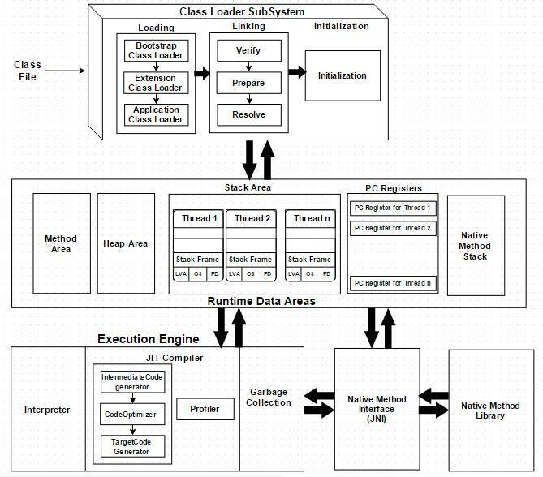
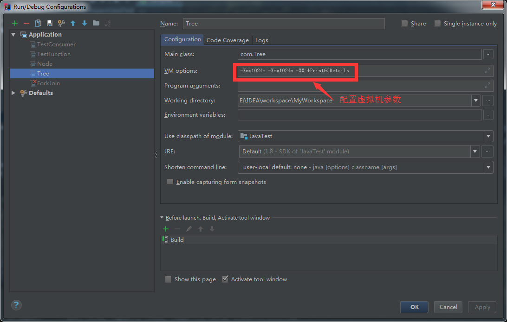
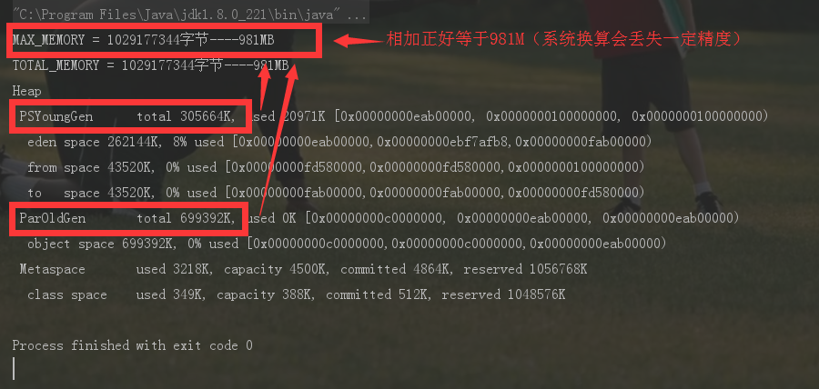

JVM基本构架
虚拟机是物理机的软件实现。Java的设计理念是WORA（Write Once Run Anywhere，一次编写随处运行）。编译器将Java文件编译为Java .class文件，然后将.class文件输入到JVM中，JVM执行类文件的加载和执行的操作。以下为JVM架构图：

如上面架构图所示，JVM分为三个主要子系统：
1.类加载器子系统（Class Loader Subsystem）
Java的动态类加载功能由类加载器子系统处理，处理过程包括加载和链接，并在类文件运行时，首次引用类时就开始实例化类文件，而不是在编译时进行。
1.1 加载
Boot Strap类加载器，Extension类加载器和Application
(1) Boot Strap类加载器：负责从引导类路径加载类，除了rt.jar，它具有最高优先级；
(2) Extension 类加载器：负责加载ext文件夹（jre \ lib）中的类；
(3) Application类加载器：负责加载应用程序级类路径，环境变量中指定的路径等信息。
上面的类装载器在加载类文件时遵循委托层次算法（Delegation Hierarchy Algorithm）。
1.2 链接
(1) 验证（Verify）：字节码验证器将验证生成的字节码是否正确，如果验证失败，将提示验证错误；
(2) 准备（Prepare）：对于所有静态变量，内存将会以默认值进行分配；
(3) 解释（Resolve）：有符号存储器引用都将替换为来自方法区（Method Area）的原始引用。
1.3 初始化
这是类加载的最后阶段，所有的静态变量都将被赋予原始值，并且静态区块将被执行。
2.运行时数据区（Runtime Data Area）
运行时数据区可分为5个主要组件：
(1) 方法区（Method Area）：所有的类级数据将存储在这里，包括静态变量。每个JVM只有一个方法区，它是一个共享资源；
(2) 堆区域（Heap Area）：所有对象及其对应的实例变量和数组将存储在这里。每个JVM也只有一个堆区域。由于方法和堆区域共享多个线程的内存，所存储的数据不是线程安全的；
(3) 堆栈区（Stack Area）：对于每个线程，将创建单独的运行时堆栈。对于每个方法调用，将在堆栈存储器中产生一个条目，称为堆栈帧。所有局部变量将在堆栈内存中创建。堆栈区域是线程安全的，因为它不共享资源。堆栈框架分为三个子元素：
局部变量数组（Local Variable Array）：与方法相关，涉及局部变量，并在此存储相应的值
操作数堆栈（Operand stack）：如果需要执行任何中间操作，操作数堆栈将充当运行时工作空间来执行操作
帧数据（Frame Data）：对应于方法的所有符号存储在此处。在任何异常的情况下，捕获的区块信息将被保持在帧数据中；
(4) PC寄存器（PC Registers）：每个线程都有单独的PC寄存器，用于保存当前执行指令的地址。一旦执行指令，PC寄存器将被下一条指令更新，是一个非常小的内存空间，可以忽略不计；
(5) 本地方法堆栈（Native Method stacks）：本地方法堆栈保存本地方法信息。对于每个线程，将创建一个单独的本地方法堆栈。
3.执行引擎（Execution Engine）
分配给运行时数据区的字节码将由执行引擎执行，执行引擎读取字节码并逐个执行。
(1) 解释器：解释器更快地解释字节码，但执行缓慢。解释器的缺点是当一个方法被调用多次时，每次都需要一个新的解释；
(2) JIT编译器：JIT编译器消除了解释器的缺点。执行引擎将在转换字节码时使用解释器的帮助，但是当它发现重复的代码时，将使用JIT编译器，它编译整个字节码并将其更改为本地代码。这个本地代码将直接用于重复的方法调用，这提高了系统的性能。JIT的构成组件为：
中间代码生成器（Intermediate Code Generator）：生成中间代码
代码优化器（Code Optimizer）：负责优化上面生成的中间代码
目标代码生成器（Target Code Generator）：负责生成机器代码或本地代码
分析器（Profiler）：一个特殊组件，负责查找热点，即该方法是否被多次调用；
(3) 垃圾收集器(Garbage Collector)：收集和删除未引用的对象。可以通过调用“System.gc（）”触发垃圾收集，但不能保证执行。JVM的垃圾回收对象是已创建的对象。
Java本机接口（JNI）：JNI将与本机方法库进行交互，并提供执行引擎所需的本机库。
本地方法库（Native Method Libraries）：它是执行引擎所需的本机库的集合。
堆内存调优简介
运行时数据区可以通过Runtime.getRuntime()方法获得
public static void main(String[] args) {
long maxMemory = Runtime.getRuntime().maxMemory();//虚拟机试图使用的最大内存
long totalMemory = Runtime.getRuntime().totalMemory();//虚拟机中的内存总量
System.out.println("MAX_MEMORY = " + maxMemory + "字节----" + (maxMemory/1024/1024) + "MB");
System.out.println("TOTAL_MEMORY = " + totalMemory + "字节----" + (totalMemory/1024/1024) + "MB");
}


常用JVM参数
| -Xms | 设置初始分配大小，默认为物理内存的“1/64” |
|---|---|
| -Xmx | 最大分配内存，默认为物理内存的“1/4” |
| -XX:+PrintGCDetails | 输出详细的GC处理日志 |
| -XX:+PrintGCTimeStamps | 打印CG发生的时间戳 |
| -Xloggc:log/gc.log | 指定GC log的位置，以文件输出，帮助开发人员分析问题 |
| -XX:+HeapDumpOnOutOfMemoryError | OOM时导出堆到文件，根据这个文件，可以看到系统dump时发生了什么 |
三大垃圾收集算法
1.标记/清除算法【最基础】
2.复制算法
3.标记/整理算法
jvm采用`分代收集算法`对不同区域采用不同的回收算法。
新生代采用复制算法
新生代中因为对象都是"朝生夕死的”，【深入理解JVM虚拟机上说98%的对象,不知道是不是这么多，总之就是存活率很低】，适用于复制算法【复制算法比较适合用于存活率低的内存区域】。它优化了标记/清除算法的效率和内存碎片问题，且JVM不以5:5分配内存【由于存活率低，不需要复制保留那么大的区域造成空间上的浪费，因此不需要按1:1【原有区域:保留空间】划分内存区域，而是将内存分为一块Eden空间和From Survivor、To Survivor【保留空间】，三者默认比例为8:1:1，优先使用Eden区，若Eden区满，则将对象复制到第二块内存区上。但是不能保证每次回收都只有不多于10%的对象存货，所以Survivor区不够的话，则会依赖老年代年存进行分配】。
GC开始时，对象只会存于Eden和From Survivor区域，To Survivor【保留空间】为空。
GC进行时，Eden区所有存活的对象都被复制到To Survivor区，而From Survivor区中，仍存活的对象会根据它们的年龄值决定去向，年龄值达到年龄阈值(默认15是因为对象头中年龄战4bit，新生代每熬过一次垃圾回收，年龄+1)，则移到老年代，没有达到则复制到To Survivor。
老年代采用标记/清除算法或标记/整理算法
由于老年代存活率高，没有额外空间给他做担保，必须使用这两种算法。
内存效率：复制算法 > 标记清除 > 标记整理算法（此处的效率只是简单的对比时间复杂度，实际情况不一定如此）
内存整齐度：复制算法 = 标记整理算法 > 标记清除算法
内存利用率：标记整理算法 = 标记清除算法 > 复制算法